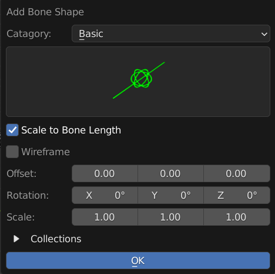

Add / Apply Bone Shape
Add Bone Shape
Object |
Add Bone Shape will Append Choice of Bone Shape to the Scene
You can Add Your Own Bone Shape / Widget by Editing the Widget.blend File in the /Widgets folder in the Addon Folder
- Widgets
Pick the Widget that you want to Add
- Position
Add the Bone Shape at the Center or 3D Cursor
- Collection
Use Collection: Put the Widget Shape into a Collection
Collection Name: Collection Name to put the Widget into

Apply Bone Shape
Pose |
Apply Bone Shape will Append Choice of Bone Shape to the Scene and Apply to the Selected Bones
- Scale to Bone Length
Turn on Scale to Bone Length Display Settings for the active bone
- Wireframe
Turn on Wireframe Display for the active bone
- Collection
Use Collection: Put the Widget Shape into a Collection
Collection Name: Collection Name to put the Widget into
- Offset / Rotation / Scale
Options To Tweak the Offset, Rotation and Scale of the Bone Shape
You can get live feedback of the tweak if you adjust it in the Pop Up at bottom left After Applying the operator
Adjustment
You can Tweak the Bone Shape and get the feedback Using the Pop Up Options At Bottom Left After Apply the Operator
The Bone Shape is Imported and Moved to the Exact Same Spot at the Bone, You can Edit the Mesh to Change the Bone Freely

Add Your Own Custom Bone Shape
You Add New Bone Shape By Editing Bonera_Toolkit/Widgets/Widget.blend
Just Create a Your Bone Shape in the Blend File, and rename it appropriately.
The Addon will automatically Use the Object Name with the prefix “WGT-”” removed.
Optional
There is a Script in the File that helps you to organize the object nicely in the scene, this does not affect the imported object in any way. It just make the scene looks neater